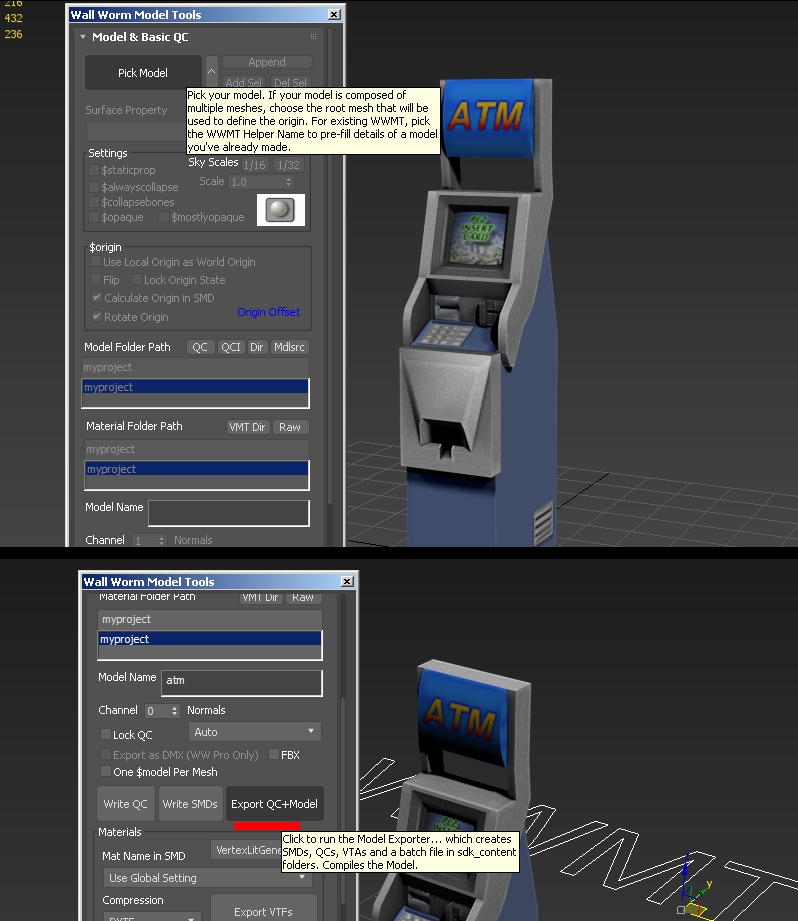
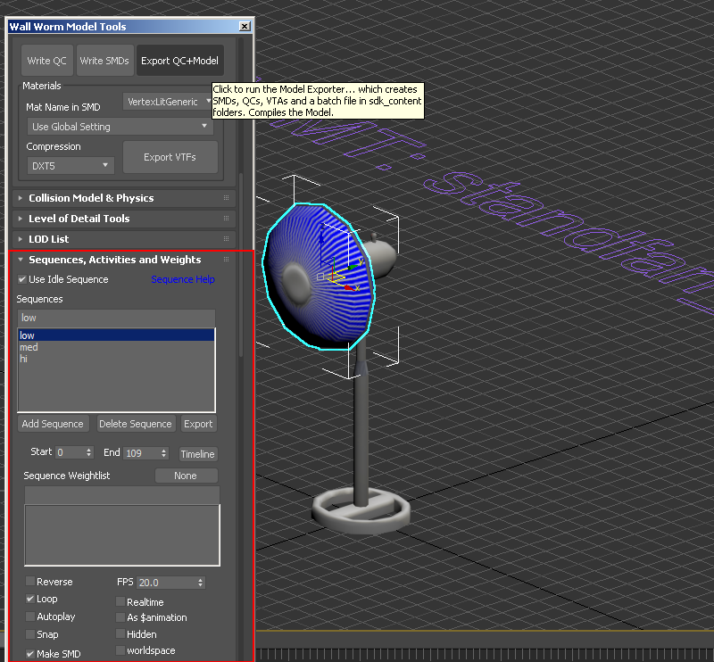
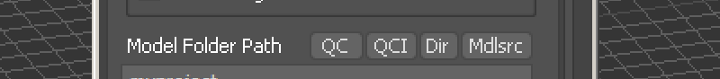
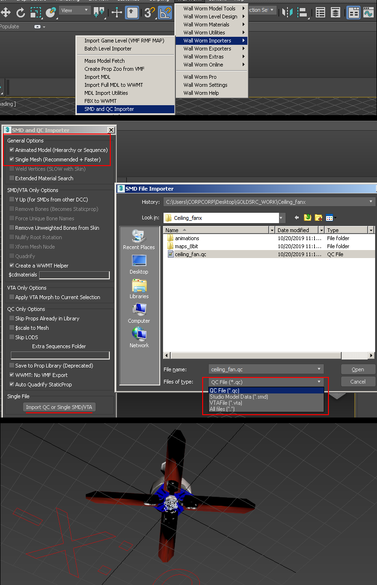
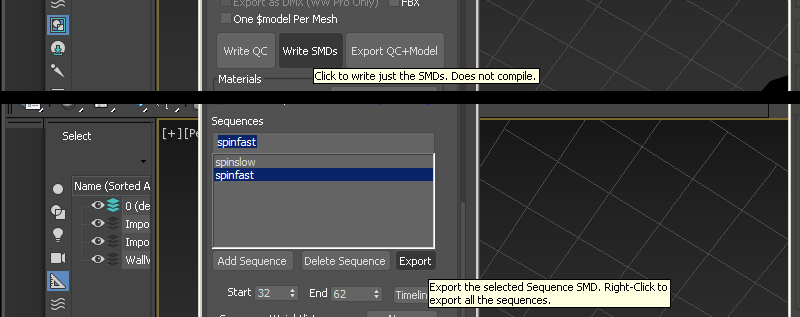
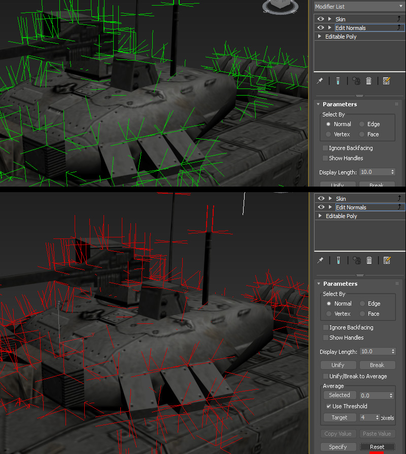
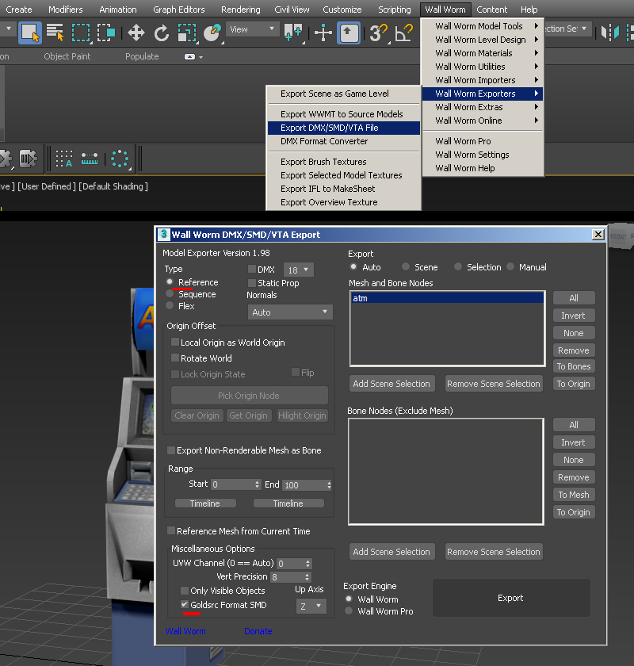
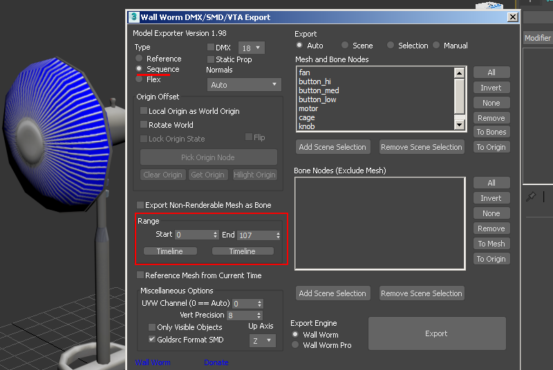

3D Studio Max With Wall Worm Model Tools

"WallWorm Model Tools" can be downloaded here. Extended documentation can also be found at this address.
Currently supported versions: 3DS Max 2019~2023
see changelog for details. Reccomended version is 2022.
Note: legacy versions may lack full GoldSrc direct compile support; but can still use the Export SMD Utility window.
WallWorm Model Tools has a wide variety of features and utilities which can be found on the main site and on the youtube channel. To get started, once installed follow this guide to setup for GoldSrc environment so you can use the WWMT utility to its fullest: http://dev.wallworm.com/document/207/setting_up_wall_worm_for_goldsource.html. If you want just import/exporting of SMDs you can use the import/export window instead of the WWMT helper.
Jump to Exporting A Simple Animated Prop Full Compile Jump to Importing Meshes, animations & full QC import Jump to Exporting Meshes & animations Using the SMD Export Utility
Exporting A Static Prop Full Compile
1)Be sure to set up your WWMT config to goldsrc as mentioned before and set your pivot point if you havent already. Note that prop models with pivot point below the main grid may cause lighting issues in your map, so its best to center to your model. Since this example is a static model you will not need a skin modifier. Go to WallWorm> WallWorm Model Tools > Then select your model. This will create a WWMT helper.
2)Then simply press the "Export QC+Model" button. Your model will have an automatic qc created then compiled to your specified directory.

Continue To Prop Placement
Exporting A Simple Animated Prop Full Compile
1)In the WWMT window, scroll down to "Sequences" tab and then define your sequences by first typing out a name, setting a start and end range in your timeline, set the FPS, and then loop if necessary. Then as before press "Export QC+Model" button.

NOTE: This model uses $texrendermode masked for transparency; to add this I manually added it in the generated QC file by clicking the QC or QCI buttons which will bring them up in your editor:

Continue To Prop Placement
Importing Meshes, animations & full QC import
1)Go to Go to WallWorm>Wall Worm Importers>SMD and QC Importer
2)From here you have a few options: either import SMD file only, which in that case you make sure the "animated model" is unchecked if you are importing a reference sequence, and if you are importing an animation sequence, then check the box.
If you are doing a Full QC import then it will automatically import reference & sequence if needed. Importing QC also imports many things as well such as hitboxes, attachments, and other things that are written in QC files. By default the checkbox "Create a WWMT helper" will be checked and when you have your model imported and you pick model (by clicking the WWMT text helper) you will have your model fully set up with sequences ready in the WWMT window.

You can also use the "Write SMDs" for all SMD reference meshes & animations, or from the sequence window individually. This is useful if you want to do just individual ones and/or author your own QC and do the compiling yourself or with another utility like Crowbar.

If you are doing the compiling and QC writing yourself then:
Continue to Compiling
General editing info to note and working with Explicit vertex normals
Some important things to note about about working with imported geometry in 3dsmax is that if you want to make minor edits (say like UV changes with UVW Unwrap modifier) with the skinning intact, then create the modifier below the "Skin" modifier in the stack.'
SMD imports are done with "explicit normals" for smoothing. These can be a bit difficult to work with and at times may break while adding to the modifier stack. If you are doing simple edits like removing parts it may be best to do your import without "edit poly" in the import options. Some modifiers that break smoothing you can possibly try making an edit normals modifier and placing it on top, but sometimes that only works with edit mesh.
For topology edits with edit poly or needing to edit smoothing, you will need to add an "edit normals" modifier and either directly edit the explicit normals (green sticks) or if you need to use smoothing groups, you will have to select the normals or select all (sticks turn red), and press "reset." After deselecting the sticks should be blue to indicate they are now in face render mode and able to be editied by smoothing groups and auto smoothing in editable poly.

Exporting Meshes & animations Using the SMD Export Utility
The SMD exporter tool can be found in WallWorm>WallWorm Exporters>Export DMX/SMD/VTA file. This window is for individual SMD exports without using the standard WWMT helper setup, and can be used without a config.
1) For a reference mesh it is as simple as making sure reference is checked and "GoldSrc Format SMD" checked. This window also has some useful extended options like changing origin offset, visible options and swapping mesh and bone nodes.

2) For Animated Sequence only, check the sequence button then set a timeline range for the sequence SMD.
